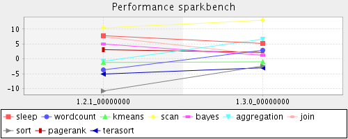
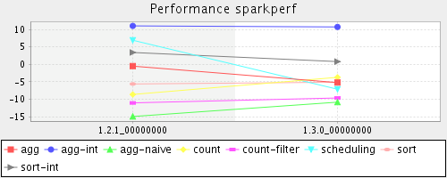

Release
Summary
The lower percent the better performance.
| Group | 1.2.1 | 1.3.0 |
|---|
| sparkbench | 1.2% | 2.6% |
| sparkperf | -2.4% | -3.8% |

Detail
sparkbench
| JOB |
1.2.1 |
1.3.0 |
| sleep |
7.8% |
5.2% |
| wordcount |
-3.7% |
2.9% |
| kmeans |
-1.2% |
-1.0% |
| scan |
10.4% |
13.0% |
| bayes |
5.0% |
1.2% |
| aggregation |
-0.8% |
6.6% |
| join |
7.4% |
1.5% |
| sort |
-10.8% |
-2.4% |
| pagerank |
3.1% |
2.2% |
| terasort |
-5.1% |
-3.0% |
Comments: null means no such workload running or workload failed in this time.

sparkperf
| JOB |
1.2.1 |
1.3.0 |
| agg |
-0.5% |
-5.2% |
| agg-int |
11.0% |
10.7% |
| agg-naive |
-14.9% |
-10.8% |
| count |
-8.6% |
-3.7% |
| count-filter |
-11.0% |
-9.6% |
| scheduling |
6.9% |
-7.1% |
| sort |
-5.6% |
-5.1% |
| sort-int |
3.4% |
0.8% |
Comments: null means no such workload running or workload failed in this time.
